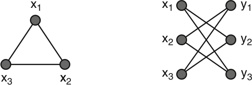
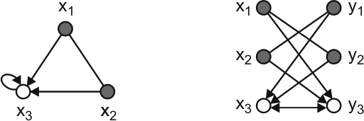

%%{ init: { 'flowchart': { 'curve': 'linear' } } }%%
flowchart TD
A(Classical Walks)-- Quantize by coin -->B(Quantum Walk);
A-- Stochastic Reset -->C(Stochastic Reset Classical Walk);
B-- Stochastic Reset -->D(Stochastic Reset Quantum Walk);
C-.-D;
D-- Quantize by coin -->E(Quantum Reset Quantum walk);
C-- ? -->F(Unitary quantum reset):::newwork;
E-.-F;
classDef newwork fill:#45f97b,color:#000;
6 Quantum Markov Chains
As suggested in the earlier chapter, we would like to define a unitary quantum resetting protocol unitary for analytical and interpretational simplicity. For this, we reconsider our path until now (Figure 8.1). Instead of quantizing the stochastic reset quantum walk via a coin, can we quantize the stochastic reset classical walk directly?
6.1 Generalized Coined walks
When we quantized walks in Chapter 2, we attached a 2 level coin whose states represented the selected edge, and by putting the coin into superposition, one can apply a superposition of jumps. We would like to quantize walks on arbitrary undirected graphs using the coined walk formalism.
Graphs can be partitioned into two classes, Class 1 and 2, based of the chromaticity of the graph.
Edge Chromaticity
The edge-chromaticity of a graph is the minimum number of colors that the edges can be colored with such that no two adjacent edges are similarly colored and is denoted by \(\rho(G)\).
By Vizing’s theorem1, \(\Delta(G) \le \rho(G) \le \Delta(G)+1\), where \(\Delta(G)\) is the max degree of the graph.
Graphs of Class 1 are those where \(\Delta(G) = \rho(G)\) and graphs of Class 2 are the others. Walks on Class 1 graphs can be quantized by the coin - position formalism similar to the one introduced in Chapter 2, whereas walks on Class 2 graphs can be quantized by a walk on the edges rather than the nodes2. However, we’re still restricted to undirected graphs.
6.2 Szegedy Walks
It is known that discrete time Markov chains do not naturally quantize via the coin formalism3. Szegedy3 came up with a formalism to quantize symmetric irreducible Markov chains by using the bipartite double cover of the underlying graph (Figure 6.2). This was then generalized to ergodic chains by Magniez et al.4. What follows is a brief introduction to the generalized Szegedy walks.

6.2.1 Formalism
Let \(P\) be the transition matrix of a reversible Markov chain. Let \(P^*\) be the time reversed Markov chain of \(P\).
For a state \(|\psi\rangle \in \mathcal{H}\), let \(\Pi_\psi = |\psi\rangle\langle \psi |\). For a subspace \(\mathcal{K}\) of \(\mathcal{H}\) spanned by a set of mutually orthogonal states \(\{|\psi_i\rangle : i \in I\}\), let \(\Pi_{\mathcal{K}} = \sum_{i\in I}\Pi_{\psi_i}\) be the projector onto \(\mathcal{K}\) and \(\mathcal{R}_{\mathcal{K}} = 2\Pi_{\mathcal{K}} - \text{Id}\) be a reflection through \(\mathcal{K}\).
Let \(\mathcal{A} = \text{Span}(|x\rangle|p_x\rangle: x\in X)\) and \(\mathcal{B} = \text{Span}(|p_y^*\rangle|y\rangle: y\in Y)\) be subspaces of \(\mathcal{H} = \mathbb{C}^{|X|\times |X|}\), where
\[|p_x\rangle = \sum_{y\in X}\sqrt{p_{xy}} |y\rangle; |p_y^*\rangle = \sum_{x\in X}\sqrt{p_{yx}^*} |x\rangle\]
where \(p_{ij}, p_{ij}^* \text{ are elements of }P, P^*\text{ respectively}\), and \(X\) is the set of nodes, \(Y\) is the set of nodes after duplication.
Quantum Markov Chain
The quantized version of the Markov chain \(P\) is defined to be the unitary operation \(W(P) = \mathcal{R}_{\mathcal{B}}\mathcal{R}_{\mathcal{A}}\) and is called the Szegedy walk. Where defined, the Szegedy walk is equivalent to two steps of the Coined quantum walk5.
The Discriminant matrix
For an ergodic Markov chain \(P\) with stable distribution \(\pi\), we define
\[D(P) = \text{diag}(\pi)^{1/2} \cdot P \cdot \text{diag}(\pi)^{-1/2}\]
as the discriminant matrix.
6.2.2 Properties
- On \(\mathcal{A}+\mathcal{B}\), eigenvalues of \(W(P)\) that have non-zero imaginary part are \(e^{\pm 2i\theta_1}, \dots, e^{\pm 2i\theta_l}\), with same multiplicity.
- On \(\mathcal{A}\cap\mathcal{B}\), \(W(P)\) acts as the identity. The left (and right) singular vectors of \(D\) with singular value 1 span this space.
- On \(\mathcal{A}\cap\mathcal{B^\perp}\) and \(\mathcal{A^\perp}\cap\mathcal{B}\), the operator acts as \(-\text{Id}\). The \(\mathcal{A}\cap\mathcal{B^\perp}\) (resp. \(\mathcal{A^\perp}\cap\mathcal{B}\)), is spanned by the set of left (resp. right) singular vectors of D
- W(P) has no other eigenvalues on \(\mathcal{A}+\mathcal{B}\); on \(\mathcal{A}^\perp\cap\mathcal{B}^\perp\) it acts as \(\text{Id}\)
6.3 Szegedy Search or the Quantum Hitting Time
Of the many ways to define the search algorithm (refer to Chapter 3 for an introduction) for Szegedy walks, we shall look at two protocols, one which is easy to understand and the other easy to analyse. The original paper by Szegedy3 proposed the following protocol -
- Modify the classical Markov chain to make all the marked vertices sinks (Figure 6.3).
\[ p^\prime_{xy} = \begin{cases} p_{xy}, &x \notin G\\ \delta_{xy}, &x \in G \end{cases} \]
- Define \(W^\prime(P)\) as the quantum Markov chain by the usual protocol.
- Define the initial state
\[|\psi(0)\rangle = \frac{1}{\sqrt{n}}\sum_{\substack{x\in X\\ y \in Y}}\sqrt{p_{xy}}\]
- Finally, define the quantum hitting time such that \[F(T) \ge 1 - \frac{g}{n}\] where \[F(T) = \frac{1}{T+1}\sum_{t=0}^{T}\Big\lVert |\psi(t)\rangle - |\psi(0)\rangle\Big\rVert^2; g = |G|\]

Defined by this protocol, the quantum hitting time is quadratically smaller than the classical hitting time3 for the 1D case.
A later modification4 defined the search operation via a Grover-like oracle. This was easier to analyse, and the connection between the spectral gap of the discriminant matrix (Section 6.2.1) and the quadratic speedup attained by the walk is clearer. We leave the exact protocol to reference4, but only outline the steps.
- Prepare the initial state \(|\pi\rangle|0^Tks\rangle\), where \[|\pi\rangle_d = \sum_{x\in X} \sqrt{\pi_x}|x\rangle |p_x\rangle = \sum_{y\in X} \sqrt{\pi_x}|x\rangle |p_x\rangle\]
- First apply the Grover oracle \[\mathcal{G}(|x\rangle_d|y\rangle_d |z\rangle) = \begin{cases}-|x\rangle_d|y\rangle_d|z\rangle, & \text{if } x \in G\\+|x\rangle_d|y\rangle_d|z\rangle, & \text{otherwise}\end{cases}\]
- Apply a phase estimation circuit to the quantum walk, repeated \(k\) times.
- Repeat steps 2 and 3 \(T\) times.
- Observe the first register, by a projective measurement in the computational basis. Denote by \(\bar{x}\)
- With high probability, output \(\bar{x}\) lies in \(G\)
If the eigenvalue gap of the Markov chain is \(\delta\), and \(\frac{|G|}{N} \ge \epsilon \ge 0\), the cost to perform this circuit is of order \(\left(\frac{1}{\sqrt{\epsilon\delta}} \log \frac{1}{\sqrt \epsilon}\right)\) calls to the walk operation4. Contrast this with the classical search which requires \(\frac{1}{\delta\epsilon}\) steps of the Markov walk, we see the quadratic speedup 1.
Therefore, one can find the spectral gap \(\delta\) of \(P\) and compare the search speed of two chains. This Szegedy formalism beautifully sets up the stage for a truly unitary quantum reset quantum walk protocol which can be analysed for any graph structure without having to resort to simulation techniques.